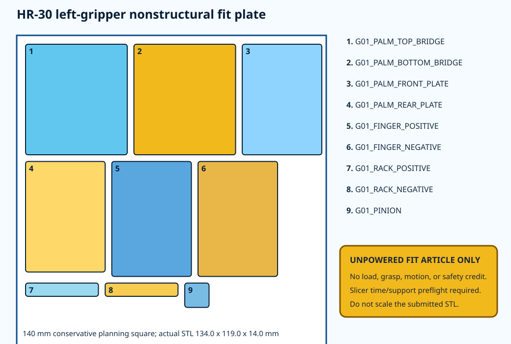

9 parts
one 1:1 left-gripper fit plate, 134.0 × 119.0 × 14.0 mm.
Boston, Massachusetts · current-source review 2026-08-17
One library-sized gripper plate, one complete 98-part makerspace bundle, and eight verified local/regional facility routes connect the existing CAD to an unpowered first fit check.
one 1:1 left-gripper fit plate, 134.0 × 119.0 × 14.0 mm.
complete body fit-check bundle with travelers and inspection records.
library, community-shop and commercial candidates.
no physical or structural credit yet.
The first submission is a nine-part, nonstructural left-gripper mechanism plate. It tests the visible hand architecture before consuming a whole-body print queue. It is 100% scale and contains no G-code.

Download the controlled STL · Read the submission note · SHA-256 3f34070885c28e9322eddbdbe4c286319664a76d6407c1957d0c2230f410bc63
Download the 98-part fit-check ZIP (5.9 MB). It contains all bed-normalized STLs, print settings, 22 build-plate records, the 54-step assembly traveler and 392 inspection records. It deliberately contains no G-code.
SHA-256 13ad657b9781336640a4b2fda010bf0a5af0842cb222f0a6226e9318c6a70d62
| Facility | Verified capability | Current state | Project role | Cost |
|---|---|---|---|---|
| Boston Public Library / KBLIC | MakerBot Sketch; PLA; STL intake; 146 x 146 x 146 mm maximum; 0.10-0.40 mm resolution; tuned 0.20 mm | TEMPORARILY UNAVAILABLE ON CURRENT KBLIC PAGE | one small nonstructural fit plate only after availability and slicer-time confirmation | NOT STATED / CONFIRM |
| Artisans Asylum | digital fabrication/3D printing; machine shop; metal shop; CNC plasma; electronics/robotics; ShopBot | OPEN; EXACT MACHINE AVAILABILITY REQUIRES CONFIRMATION | PRIMARY LOCAL CANDIDATE for 98-part fit check, metal DFM, fixture and electronics support | CLASS/DAY-PASS/MEMBERSHIP OR PRIVATE LESSON - CURRENT PRICE CONFIRMATION REQUIRED |
| Boston Makers | LulzBot 3 and Powerspec Ultra 3D printers; laser/electronics/wood tools | OPEN - CONFIRM | SECONDARY SMALL-PRINT / ELECTRONICS WORKSPACE; NOT A VERIFIED METAL-CNC ROUTE | MEMBERSHIP REQUIRED / CONFIRM |
| Mill Forge Makerspace | welding, metal work, FDM/resin printing, CNC laser and routers | OPEN - CONFIRM | SECONDARY MAKER / WELDING / FABRICATION CANDIDATE | MEMBERSHIP REQUIRED / CONFIRM |
| Armstrong Machining | prototype/low-volume CNC milling/turning; aluminum/steel/plastics; welding; finishing | NO CONTACT / NO QUOTE | LOCAL COMMERCIAL METAL RFQ CANDIDATE | QUOTE REQUIRED |
| True Position Machine | prototype CNC in metal/plastic; design assistance; STEP/IGES/PDF intake | NO CONTACT / NO QUOTE | REGIONAL COMMERCIAL PROTOTYPE RFQ CANDIDATE | QUOTE REQUIRED |
| Borg Design | 4/5-axis CNC; prototype machining; additive; SolidWorks/DFM | NO CONTACT / NO QUOTE | REGIONAL COMMERCIAL PRECISION/COMPLEX-PART RFQ CANDIDATE | QUOTE REQUIRED |
| Tucker Engineering | 3/4-axis milling; turning; deburring; assembly; finishing | NO CONTACT / NO QUOTE | LOCAL COMMERCIAL MACHINED-PART / THERMAL RFQ CANDIDATE | QUOTE REQUIRED |
| # | Action | Completion evidence | State |
|---|---|---|---|
| 1 | Confirm BPL 3D-print service has resumed; do not submit while current page says temporarily unavailable | dated written availability response | OPEN |
| 2 | Ask BPL to preflight the controlled G01 plate at 100% scale and reject if estimated time exceeds 7 hours | slicer screenshot/profile/time plus accepted request | OPEN |
| 3 | Tour/contact Artisans Asylum and confirm FDM capacity for the complete 98-part bundle plus training/access requirements | dated capability response, printer/envelope/material/profile and cost | OPEN |
| 4 | Review the controlled five-batch metal RFQ package with Artisans machine shop or one commercial candidate | written DFM response with process/material/tolerance/inspection assumptions | OPEN |
| 5 | Print, label and inspect the G01 plate before authorizing any further fit-check batch | nine identified parts; photos; dimensions; fit/issue record; no powered use | OPEN |